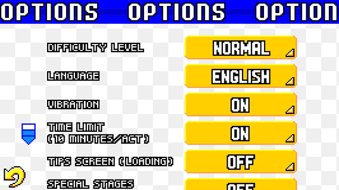
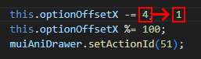
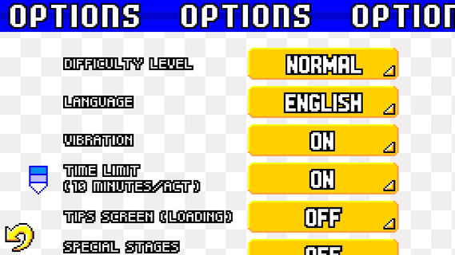

Project 60fps
Introduction
Hello and welcome to the Project 60fps page!
The goal of this project is to make the Android port of Sonic Advance run at 60fps.
However, while this sounds simple, this task is actually too demanding to make it possible.
Therefore, I made this page to explain how to make the game run smoothly and why it is complicated.
Also, if you have enough experience with Java programming and would like to give some help for this project, you can contact me via the Contact page.

How to make the game run at 60fps?
Well... the answer is actually simple!
In source code, all you have to do is put the FRAME_SKIP value to 0 in the getFrameTime() method of the MainState file located in the MFLib folder.

Once this value is changed, recompile the APK, and voila! Problem solved, right?
WRONG! As it turns out, doing so makes the game runs too fast! It runs 4 times faster than it supposed to be.
What is going on?
Before talking about the solution, I would like to explain what is going on in the game.
First of all, we all know that the Android port of Sonic Advance has a problematic frame rate.
The Android port runs at 15fps.
While you might think that the game lags so much, the game is actually designed to run at 15fps!
Here's the proof that the game is intended to run at this frame rate:

As you can see, this is the Options menu running at 15fps.
Now, what I'm gonna do is to change the value that determines the speed of the options banner.
Located in the TitleState smali file is the optionOffsetX value set to 4.
This value determines the movement of the options banner per frame. When it's equal 4, that means the options banner moves 4 pixels to the left per frame.
For this example, I will put the optionOffsetX value to 1.

After decompilation, you can see that the options banner on top of the screen now moves 4 times slower.
Or more accurately, it moves 1 pixel to the left per frame.

However, if I make the game run at 60fps, here is how the options banner behaves:

As you can see now is that the options banner now moves at its intended speed, but in a smoother frame rate!
The options banner still moves 1 pixel to the left per frame, but because now the game runs at 60fps, it looks like I made the options banner moves smoother!
The solution in theory
Alright. We have an example of how to fix an animation when giving the game a different frame rate.
Now, the question that is actually the right one to ask is this: How to make the game run at 60fps and at the right speed?
Well, here's my theory: Since the game is intentionally running at 15fps, we have to change all the values regarding speed, physics, gravity, time and animation frames by dividing or multiplying all those values by 4.
In this way, the game will run 4 times slower at 15fps, but it will run at normal speed at 60fps!
You might think that this is a good news, but the problem is that this is more complicated.
You see, Sonic Advance is a quite an ambitious game in terms of programming.
Tracking down every values regarding speed, physics, gravity, time and animation frames will take a lot of time, patience and understandings of the source code.
Not to mention a few glitches to take into consideration, such as the opening animation not working properly at one point.
 Update
Update
Gdpro's mod
On August 15th 2026, I have received a message from a Telegram user named Gdpro (not to be confused with GdGohan).
He sent me the source code of Sonic Advance with his modifications in it.
After installing the application from this .swb file, I realized that the game runs at 60fps while maintaining its normal speed (for the most part).
I was so amazed about this result, but I pointed out some flaws that needed to be fixed, so I asked Gdpro to fix some issues.
And after a few updates, he uploaded his mod in GameBanana (link down-below).
Leftovers
While this sounds like great news, the 60fps project is far from being finished for multiple reasons.
First of all, some animations like the ones in the Character Select menu are embedded in .json files instead of the source code.
Because of this, it is very difficult to adjust the speed of those animations.
A possible solution would be to convert the .json embedded animation frames into the source code to make the modifications easier.
Secondly, Gdpro hasn't done fixing everything for the mod to be perfect.
There are a lot of leftovers such as glitches and oversights that might be too difficult to overcome.
Slowdowns
But the biggest issue that frame rate increase brings up are the slowdowns.
After experimenting with higher frame rate gameplay, the issue of slowdowns has been discovered when testing the game at 60fps.
Even some of the most performant mobile devices cannot mitigate slowdowns easily.
As it turns out, one key factor of the slowdown to occur are the graphics.
You see, older mobile games lack modern hardware optimizations and are not compiled with modern multi-threaded rendering in mind.
The CPU gets overwhelmed trying to draw millions of pixels on screen frame by frame based on your screen resolution, even though the game canvas only needs a small pixel resolution.
Because of this, rendering so many frames so many times than the intended frame rate may cause the device to run at its maximum capacity.
This also may cause the device to quickly heat up, trigerring thermal throttling and quick battery draining.
The underlying physics and gameplay loop require 60 internal computing cycles per second to advance time normally.
But because of the software rendering issue, the CPU can still only calculate approximately 15 updates per second.
If you force the display output to a smooth 60fps but limit the execution speed, the game engine spaces out those 15 frames over a full 60-frame timeline.
The game looks incredibly smooth because there is no stuttering, but everything moves in slow motion.
The time literally slows down by a huge percentage because the game takes nearly 4 seconds of real time to calculate one second of in-game time.
There are a few theories on how to get rid of the slowdowns.
Since we know that the slowdowns occur primarily due to the game being drawn on screen frame by frame, we have to make the graphics so it doesn't cost too much performance.
Either the screen resolution of the device has to be modified when opening the game application, or the game has to be optimized by implementing a graphics API.
GPU rendering
Gdpro has recently implemented GPU rendering to prevent the CPU from being overwhelmed by rendering the graphics.
This feature is intended to get rid of the slowdowns.
However, I put the latest build into the test!
I was testing his builds using BlueStacks at the highest screen resolution (5120x2160) with 4GB of allocated RAM and low performance.
The previous builds without featuring GPU rendering are considerably slow.
The game runs at around 20fps when animating the SEGA and SONIC TEAM logos.
However, in the build with the GPU rendering, the game runs at around 40fps during those logos, meaning that the game runs faster!
While this sounds like great news, there are things to take into consideration.
I was testing the builds on a very powerful PC.
Which means that on certain Android devices, the game might still run very slow.
I believe that either the GPU rendering needs some improvements, or there are more modifications to be made for the slowdows to begone for good.
The goal is to make the game running at 60fps at the higest screen resolution possible and at the lowest performance possible.
Conclusion
The Project 60fps of the Sonic Advance's Android port is far from being finished, but it is possible.
However, it is still a very complicated project to make it completed.
The discovery of the slowdowns when playing on higher frame rates than intended was interesting to better understand how old mobile games were designed.
With all that said, I need help from experimented Java programmers to complete this project.
The frame rate is by far the most complained issue about the Android port of Sonic Advance.
If we can solve this issue, we can finally have the best and definitive version of Sonic Advance on Android!